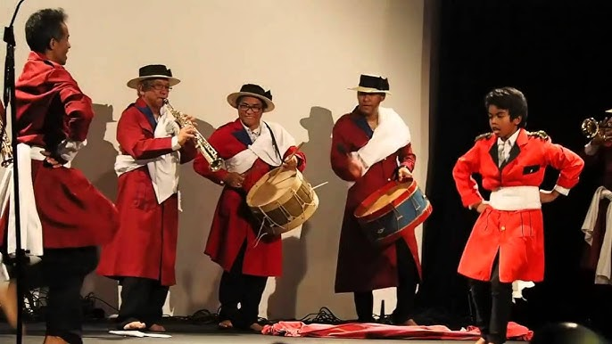
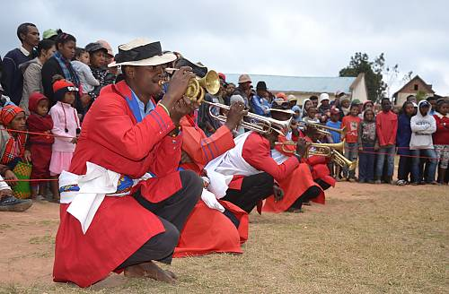
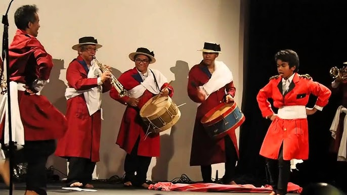
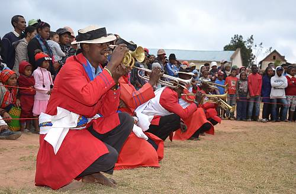

OUR PURPOSE
A Home for Malagasy Music
This platform exists to celebrate, preserve, and share the rich musical heritage of Madagascar. From ancestral rhythms to modern expressions, Malagasy music tells the story of an island shaped by culture, history, and diversity. Here, we explore the artists, instruments, and genres that define Madagascar’s unique sound — connecting tradition with the present and opening it to the world.